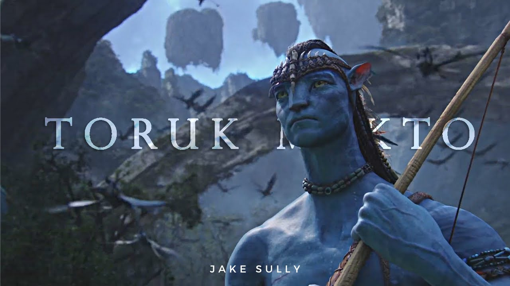
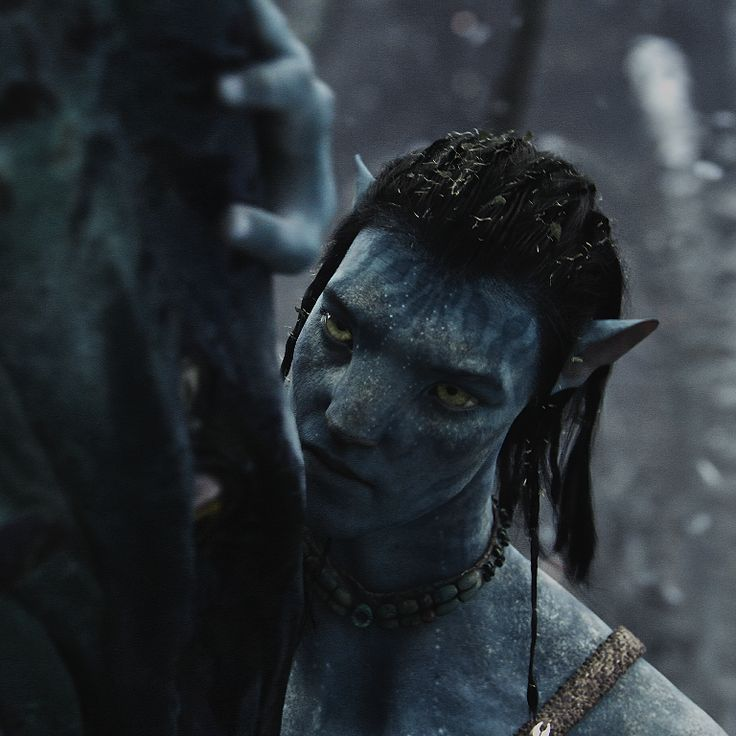

Jake Sully
Toruk Makto (Rider of Last Shadow)
Jacob "Jake" Sully (Na'vi name: Tsyeyk Suli (/t͡sjɛjk suli/)) is the main protagonist of the first Avatar film, and the overarching protagonist in Avatar: The Way of Water and Avatar: Fire and Ash. He is also a major character in the comics.
- Marine (formerly)
- Hunter / Warrior
- Toruk Makto